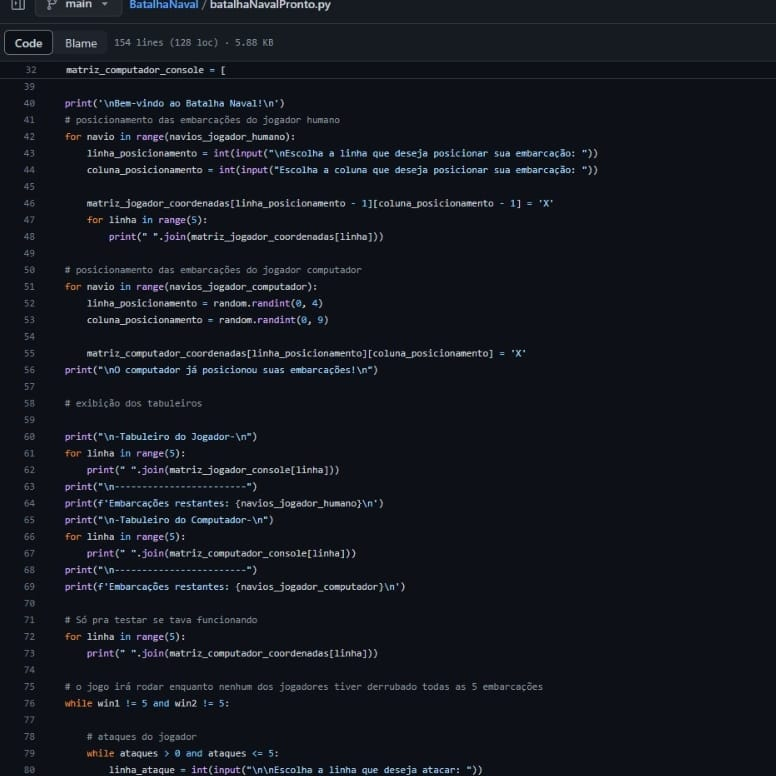

Esta disciplina foi voltada para o desenvolvimento do pensamento computacional por meio da construção de algoritmos. No final, nos tornamos capazes de implementar programas computacionais para problemas de baixa complexidade, utilizando linguagem de programação, com autorregulação e atitude cooperativa.
O famoso jogo de Pedra, Papel ou Tesoura, implementado em Python.
Nesse jogo o usuário terá 3 modos de jogo: humanoxhumano, humanoxcomputador e computadorxcomputador
O famoso jogo da forca, implementado em Python.
Nesse jogo o usuário deve adivinhar a palavra secreta, tema: animais
O famoso jogo da velha, implementado em Python.
Nesse jogo dois usuários jogam um contra o outro.
O famoso jogo de Batalha Naval, implementado em Python.
Nesse jogo o usuário joga contra o computador, até que algum dos dois derrube todas as embarcações.
